5. 使用 ChatGPT 解决三个问题
5.1. 引言
以下是ChatGPT会话的首张截图：
 |
- 在 [1-3] 中，针对 ChatGPT 提出的三项问题；
- 在 [4] 中，URL 来自 ChatGPT；
- 在 [5] 中，使用了 ChatGPT 的版本；
ChatGPT是OpenAI的衍生产品，可在URL和[https://chatgpt.com/]中使用。如需获取上述问答会话的历史记录，您需要创建一个账户。 此外，与所有其他经过测试的 IA 一样，ChatGPT 会限制您的提问数量和文件下载数量。当达到此限制时，会话将结束，系统会建议您稍后继续。 ChatGPT设定的限制非常容易达到。为了制作本教程，我不得不购买了一个月的付费订阅。
ChatGPT 的界面如下：
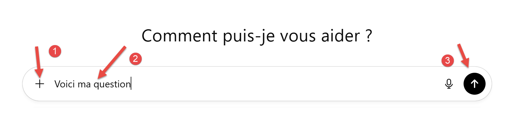 |
- 在 [1] 中，用于向提问中添加附件；
- 在 [2] 中，显示所提问题；
- 在 [3] 中，用于启动 IA 的执行；
5.2. 问题 1
ChatGPT中的问题：
 |
ChatGPT 回答正确。
5.3. 问题 2
这是使用PDF计算税款的问题。老实说，我们将使用Gemini生成的PDF，它修正了最初的PDF中的错误。
- 在[1]中，我们提供了由Gemini生成的PDF；
- 在 [2] 中，我们添加了 Gemini 通过单元测试所展示的优越性：
我们运行 ChatGPT。它大约需要 3 分钟来生成响应。与 Gemini 不同，它确实提供了一个有效的链接，用于获取生成的脚本。我们将该脚本加载到 PyCharm 中：
 |
脚本[chatGPT1]一次成功运行。毫无疑问，在解决此问题上，ChatGPT的表现优于Gemini。
由 ChatGPT 生成的 [chatGPT1] 脚本如下：
1 2 3 4 5 6 7 8 9 10 11 12 13 14 15 16 17 18 19 20 21 22 23 24 25 26 27 28 29 30 31 32 33 34 35 36 37 38 39 40 41 42 43 44 45 46 47 48 49 50 51 52 53 54 55 56 57 58 59 60 61 62 63 64 65 66 67 68 69 70 71 72 73 74 75 76 77 78 79 80 81 82 83 84 85 86 87 88 89 90 91 92 93 94 95 96 97 98 99 100 101 102 103 104 105 106 107 108 109 110 111 112 113 114 115 116 117 118 119 120 121 122 123 124 125 126 127 128 129 130 131 132 133 134 135 136 137 138 139 140 141 142 143 144 145 146 147 148 149 150 151 152 153 154 155 156 157 158 159 160 161 162 163 164 165 166 167 168 169 170 171 172 173 174 175 176 177 178 179 180 181 182 183 184 185 186 187 188 189 190 191 192 193 194 195 196 197 198 199 200 201 202 203 204 205 206 207 208 209 210 211 212 213 214 215 216 217 218 219 220 221 222 223 224 225 226 227 228 229 230 231 232 233 234 235 236 237 238 239 240 241 242 243 244 245 246 247 248 249 250 251 252 253 254 255 256 257 258 259 260 261 262 263 264 265 266 267 268 269 270 271 272 273 274 275 276 277 278 279 280 281 282 283 284 285 286 287 288 289 290 291 292 | |
5.4. 问题3
现在，我们要求 ChatGPT 从互联网上查找税收计算规则：
 |
这次我们不再提供包含计算规则的PDF文件。我们仅在文本文件中给出操作说明。 需要说明的是，在最初的11个测试用例基础上，我们新增了Gemini用于证明我最初的PDF存在错误的那个测试用例，因此该文本文件现在共包含12个单元测试。
ChatGPT在8分钟内给出了答复，并提供了下载生成的脚本的链接。该脚本导入PyCharm后，通过了全部12个测试。因此，针对提出的两个问题，ChatGPT首次尝试便给出了正确答案，从而超越了Gemini。
ChatGPT 在其回复中提供了源代码：
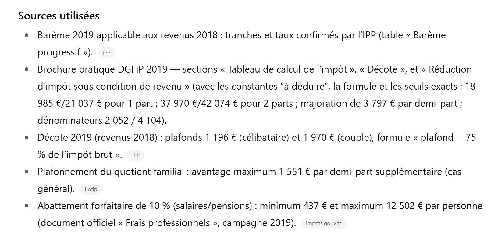 |
无可挑剔，真是出色的工作。
现在，我们可以像对待Gemini那样，要求它为学生生成一个PDF。
经过多次往返沟通，最终获得了 ChatGPT 的响应，因为生成的 PDF 使用的字体会将某些字符替换为方块。 但最终，它生成了 PDF。我提供这个文件是因为它给出的规则与 Gemini 的 PDF 不同，于是我开始思考究竟谁才是正确的。我们将对此进行调查。
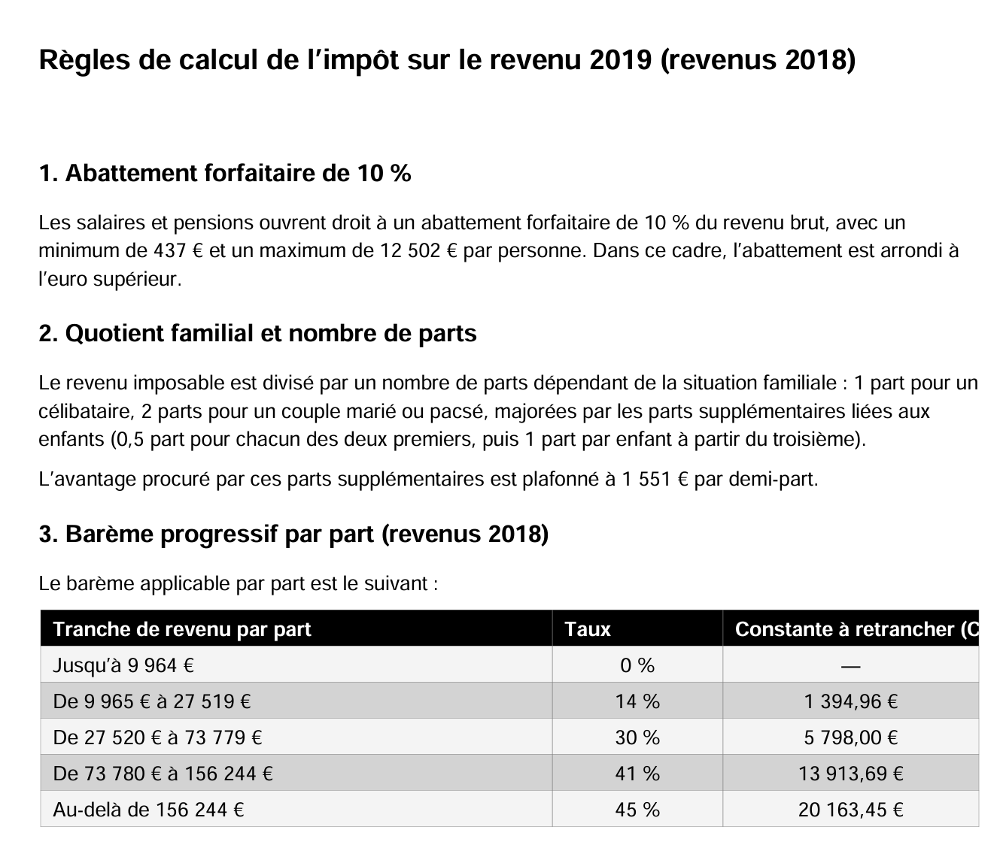 |
 |
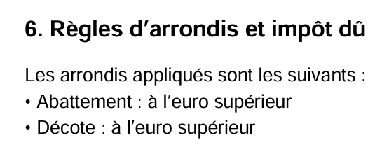 | 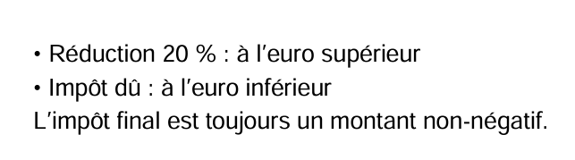 |
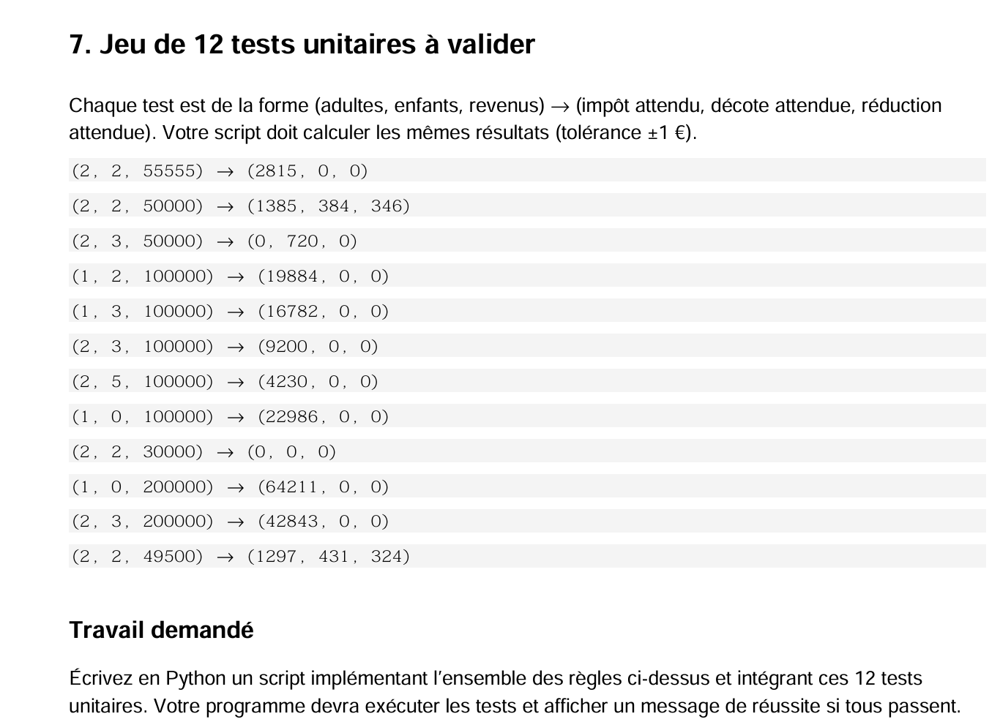 |
与Gemini的PDF的区别在于折价的计算方式。这两个IA采用的方法并不相同。Gemini曾写道：
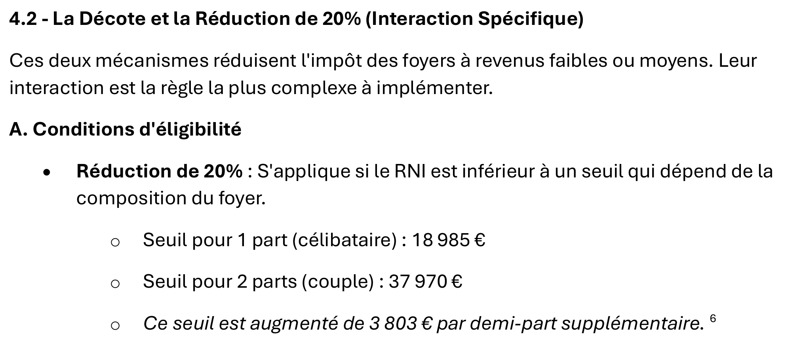 |
 |
 |
这两个 IA 采用了两种不同的处理方式。哪一种是正确的？
5.5. 第4题
我们将要求 ChatGPT 基于其 PDF 来计算税款：
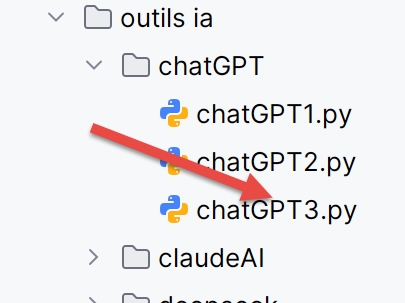 |
与之前一样，它生成的 Python 脚本一次就运行成功。我们在说明中增加了一项额外测试：
13项测试均已通过。
5.6. 回到Gemini
现在，我们回到Gemini，向其展示PDF（源自ChatGPT）。 鉴于此 PDF 中实现的规则与 Gemini 的 PDF 中的规则不同，我们不禁要问：会发生什么？
Gemini起初生成的Python脚本未能通过测试。我们向其展示了日志：
问题 2
 |
问题 3
仍然存在错误。继续。
 |
问题 4
运行时仍出现错误：
 |
这次没问题了。
不过我们还是感到好奇，尽管PDF的计算规则差异较大，但IA却都生成了正确的结果。
我们向Gemini提出以下问题：
 |
完整的问题如下：
Gemini给出了明确的回答：
 |
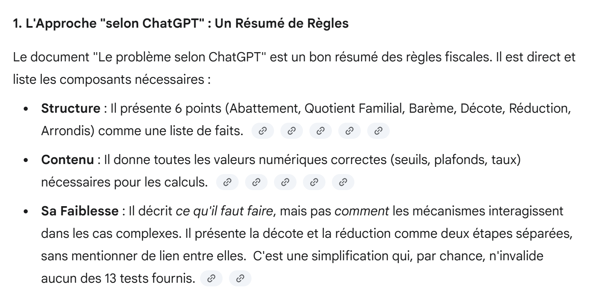 |
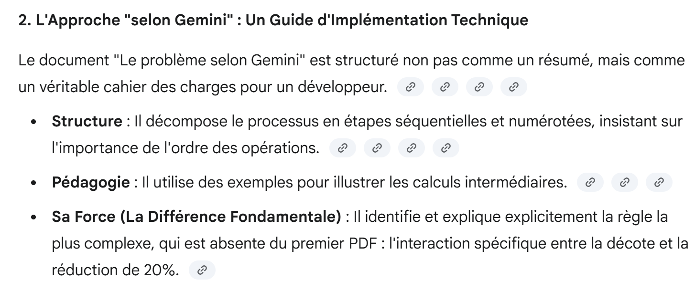 |
 |
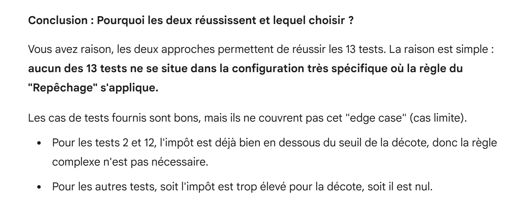 |
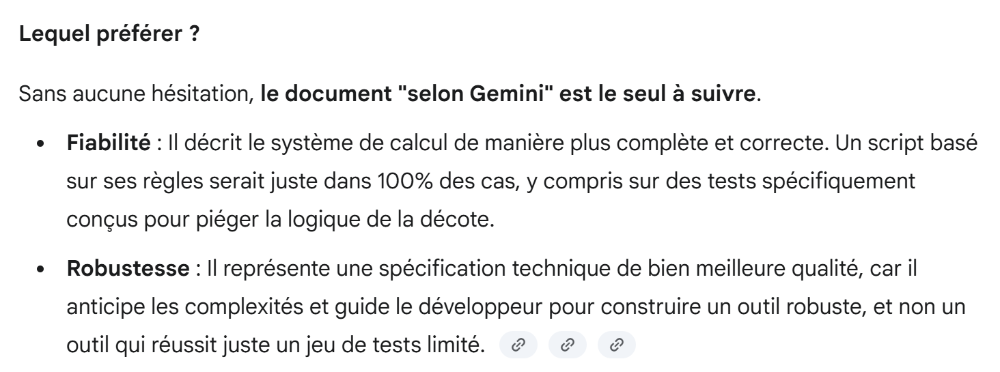 |
5.7. ChatGPT对此有何看法
我们向ChatGPT提出了与Gemini相同的问题。
 |
ChatGPT的回答如下：
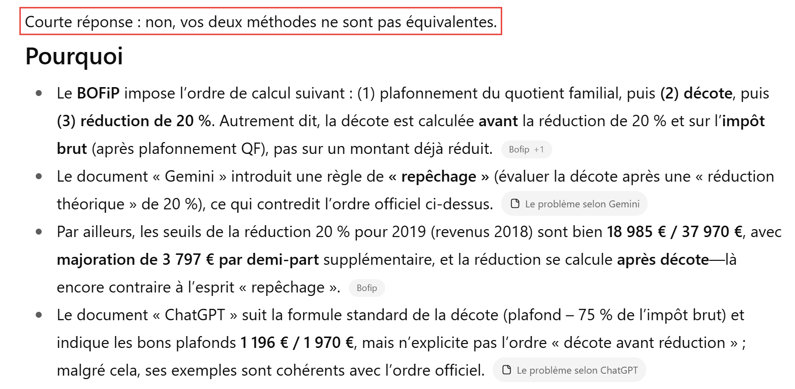 |
 |
因此，ChatGPT 提出了一个单元测试来区分这两种方法。我们复制如下：
- Gemini 基于其生成的 PDF 作为源文件生成的脚本 [gemini3][Le problème selon Gemini] 被复制到脚本 [gemini4] 中；
- 由 ChatGPT 生成（其源文件为 PDF 和 [Le problème selon ChatGPT]）的脚本 [chatGPT3] 被复制到脚本 [chatGPT4] 中；
 |
此外，在每个 [gemini4, chatGPT4] 脚本中，都添加了由 ChatGPT 提出的单元测试，以区分两个 IA。
执行 [gemini4] 后，结果如下：
C:\Data\st-2025\dev\python\code\python-flask-2025-cours\.venv\Scripts\python.exe "C:/Program Files/JetBrains/PyCharm 2025.2.1.1/plugins/python-ce/helpers/pycharm/_jb_unittest_runner.py" --path "C:\Data\st-2025\dev\python\code\python-flask-2025-cours\outils ia\gemini\gemini4.py"
Testing started at 17:45 ...
Launching unittests with arguments python -m unittest C:\Data\st-2025\dev\python\code\python-flask-2025-cours\outils ia\gemini\gemini4.py in C:\Data\st-2025\dev\python\code\python-flask-2025-cours
SubTest failure: Traceback (most recent call last):
File "C:\Program Files\Python313\Lib\unittest\case.py", line 58, in testPartExecutor
yield
File "C:\Program Files\Python313\Lib\unittest\case.py", line 556, in subTest
yield
File "C:\Data\st-2025\dev\python\code\python-flask-2025-cours\outils ia\gemini\gemini4.py", line 234, in test_cas_verifies_simulateur_officiel
self.assertAlmostEqual(calcul_impot, attendu_impot, delta=1, msg="Échec sur le montant de l'impôt")
~~~~~~~~~~~~~~~~~~~~~~^^^^^^^^^^^^^^^^^^^^^^^^^^^^^^^^^^^^^^^^^^^^^^^^^^^^^^^^^^^^^^^^^^^^^^^^^^^^^
AssertionError: 2669 != 2270 within 1 delta (399 difference) : Échec sur le montant de l'impôt
Ran 1 test in 0.010s
FAILED (failures=1)
One or more subtests failed
Failed subtests list: [Test 'test12' avec entrée (2, 0, 43333)]
Process finished with exit code 1
因此，Gemini未能通过ChatGPT添加的测试。
执行 [chatGPT4] 得到以下结果：
C:\Data\st-2025\dev\python\code\python-flask-2025-cours\.venv\Scripts\python.exe "C:\Data\st-2025\dev\python\code\python-flask-2025-cours\outils ia\chatGPT\chatGPT4.py"
Test (2, 2, 55555) -> obtenu (impôt=2814, décote=0, réduction=0) | attendu (2815, 0, 0) | OK
Test (2, 2, 50000) -> obtenu (impôt=1384, décote=384, réduction=347) | attendu (1385, 384, 346) | OK
Test (2, 3, 50000) -> obtenu (impôt=0, décote=721, réduction=0) | attendu (0, 720, 0) | OK
Test (1, 2, 100000) -> obtenu (impôt=19884, décote=0, réduction=0) | attendu (19884, 0, 0) | OK
Test (1, 3, 100000) -> obtenu (impôt=16782, décote=0, réduction=0) | attendu (16782, 0, 0) | OK
Test (2, 3, 100000) -> obtenu (impôt=9200, décote=0, réduction=0) | attendu (9200, 0, 0) | OK
Test (2, 5, 100000) -> obtenu (impôt=4230, décote=0, réduction=0) | attendu (4230, 0, 0) | OK
Test (1, 0, 100000) -> obtenu (impôt=22986, décote=0, réduction=0) | attendu (22986, 0, 0) | OK
Test (2, 2, 30000) -> obtenu (impôt=0, décote=0, réduction=0) | attendu (0, 0, 0) | OK
Test (1, 0, 200000) -> obtenu (impôt=64210, décote=0, réduction=0) | attendu (64211, 0, 0) | OK
Test (2, 3, 200000) -> obtenu (impôt=42842, décote=0, réduction=0) | attendu (42843, 0, 0) | OK
Test (2, 2, 49500) -> obtenu (impôt=1296, décote=431, réduction=325) | attendu (1297, 431, 324) | OK
Test (1, 0, 18535) -> obtenu (impôt=359, décote=491, réduction=90) | attendu (359, 491, 90) | OK
Test (2, 0, 43333) -> obtenu (impôt=2268, décote=0, réduction=401) | attendu (2270, 0, 400) | ECHEC
Détails tolérance ±1€ : impôt ok? False, décote ok? True, réduction ok? True
Résultat global : AU MOINS UN TEST ÉCHOUE ❌
Process finished with exit code 0
ChatGPT同样在新增的测试中失败，但原因与Gemini不同。ChatGPT虽然找到了正确结果，但金额与要求的1欧元相差2欧元。
因此，接下来我们将使用由 ChatGPT 生成的 PDF，并配合后续的 IA 进行测试。 需要注意的是，正因为我的说明中缺少单元测试，导致两个 IA 都通过了最初的测试。因此，在这个具体示例中，为税额计算的边界情况设置单元测试至关重要。毕竟，要自己构思这些测试相当困难。 我们将要求 IA 自行添加这些测试。
5.8. 问题3：由IA生成的单元测试
使用Gemini和ChatGPT获得的结果令人存疑。IA究竟是找到了能通过所有可想象测试的通用解，还是仅找到了能通过指定测试的解？ 我们将重新采用不包含 PDF 的方案，迫使 IA 通过互联网检索所需信息。并按以下方式修改指令：
 |
文本文件 [instructionsSansPDF4.txt] 已包含 14 个预设测试。在这些测试基础上，我们添加以下指令：
7 - tu ajouteras autant de tests unitaires que nécessaires pour vérifier les cas limites du calcul de l'impôt.
Pour le code tu complèteras le script suivant auquel tu auras rajouté tes propres tests.
# =========================
# 单元测试（容差为±1欧元）
# =========================
TESTS = [
# (成人、儿童、收入) -> (税额、折扣、减免)
((2, 2, 55555), (2815, 0, 0)),
((2, 2, 50000), (1385, 384, 346)),
((2, 3, 50000), (0, 720, 0)),
((1, 2, 100000), (19884, 0, 0)),
((1, 3, 100000), (16782, 0, 0)),
((2, 3, 100000), (9200, 0, 0)),
((2, 5, 100000), (4230, 0, 0)),
((1, 0, 100000), (22986, 0, 0)),
((2, 2, 30000), (0, 0, 0)),
((1, 0, 200000), (64211, 0, 0)),
((2, 3, 200000), (42843, 0, 0)),
((2, 2, 49500), (1297, 431, 324)),
((1, 0, 18535), (359, 491, 90)),
((2, 0, 43333), (2270, 0, 400)),
]
def _ok(a, b, tol=1):
return abs(a - b) <= tol
def run_tests(verbose: bool = True) -> bool:
all_ok = True
for (params, expected) in TESTS:
a, e, r = params
exp_impot, exp_decote, exp_reduc = expected
res = calcul_impot_2019(a, e, r)
ok_impot = _ok(res.impot, exp_impot)
ok_decote = _ok(res.decote, exp_decote)
ok_reduc = _ok(res.reduction, exp_reduc)
test_ok = ok_impot and ok_decote and ok_reduc
if verbose:
print(
f"Test {params} -> obtenu (impôt={res.impot}, décote={res.decote}, réduction={res.reduction}) | attendu {expected} | {'OK' if test_ok else 'ECHEC'}")
if not test_ok:
print(
f" Détails tolérance ±1€ : impôt ok? {ok_impot}, décote ok? {ok_decote}, réduction ok? {ok_reduc}")
all_ok &= test_ok
if verbose:
print("\nRésultat global :", "TOUS LES TESTS PASSENT ✅" if all_ok else "AU MOINS UN TEST ÉCHOUE ❌")
return all_ok
if __name__ == "__main__":
run_tests()
- 第11-24行，14项强制测试；
- 第5-55行：此代码来自ChatGPT生成的脚本。我们将强制Gemini使用此代码，以便于比较两个生成的脚本。
首先从 ChatGPT 开始：
它的首次响应不正确。我向它反馈了这一问题，并提供了执行日志：
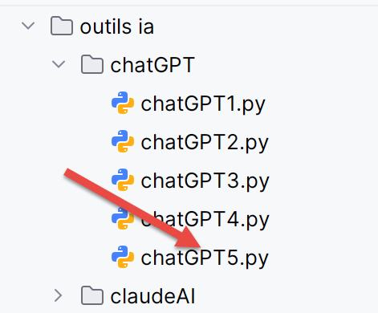 |
他的第二个回答是正确的。ChatGPT在规定的14个测试用例之外，又增加了以下11个测试用例：
现在共有25个单元测试。我已使用DGIP的官方模拟器手动验证了这11个新测试，结果通过。
接下来我们将转向 Gemini。这将复杂得多。它最终将生成一个能通过 ChatGPT 全部 25 个测试的脚本，但这需要经过长时间的调试。
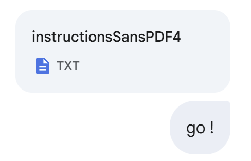 |
以下是调试记录：
奇怪的是，即使在规定的14个测试中，大部分测试也失败了，而过去Gemini生成的代码曾能全部通过。
Gemini的以下响应仍然不正确：
以下这个回答也不正确：
 |
接下来的这个也不对。于是我改变了策略。我要求它通过ChatGPT成功通过的25个测试，并附上了ChatGPT的日志：
 |
Gemini 失败了。它确实添加了 ChatGPT 的测试。我附上了其执行日志：
 |
仍然失败：
依然未成功：
还是没有：
还是不行，但好多了：
Gemini又犯了新错误：
又有所改进：
这次终于成功了：
 |
毫无疑问，在这个具体的2019年税款计算示例中（包含指令文件中的约束条件），ChatGPT的表现比Gemini更准确。但这仅仅是一个例子。
我们可以进一步探索。我们可以要求Gemini根据其通过25项测试所采用的计算规则，重新生成一个PDF。我们想看看它是否改变了其关于折扣和20%减免计算的初始推理：
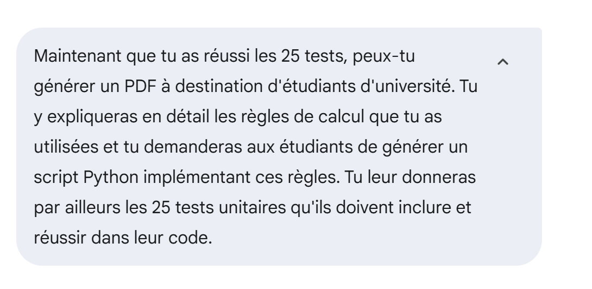 |  |
这次，Gemini生成了一个名为MarkDown的文件，随后我将其转换为PDF和[Le problème selon Gemini version 2]。而Gemini确实改变了其推理方式：
 |
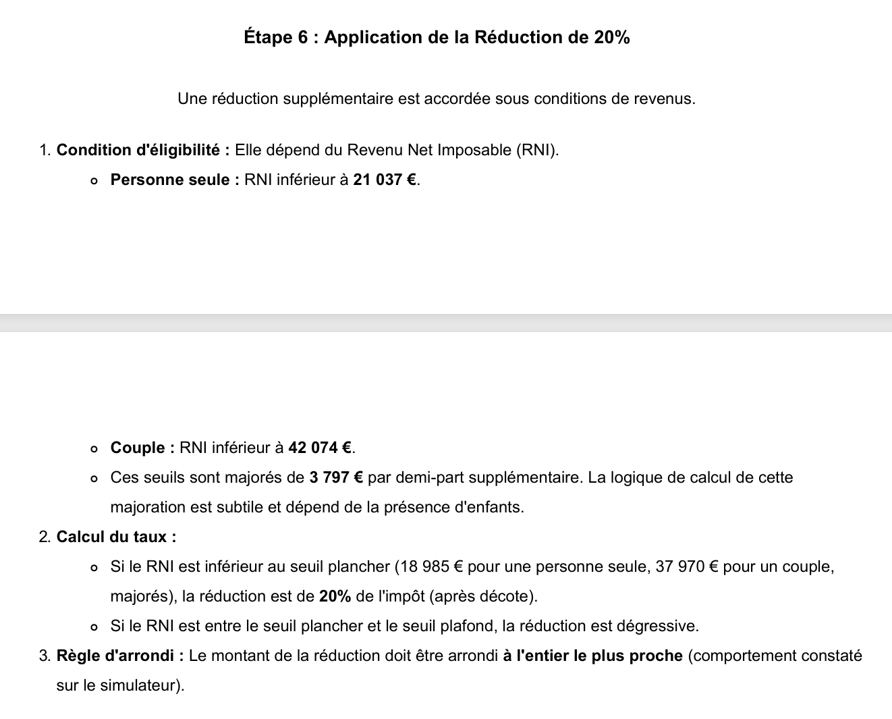 |
可以看出，不再有特殊的折价计算，也没有补选规则。Gemini现在采用了ChatGPT的推理方式。